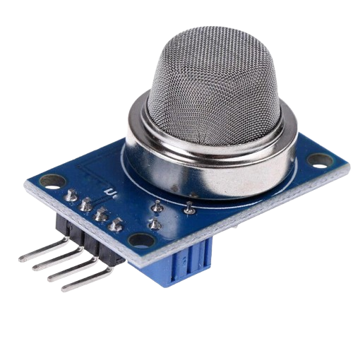
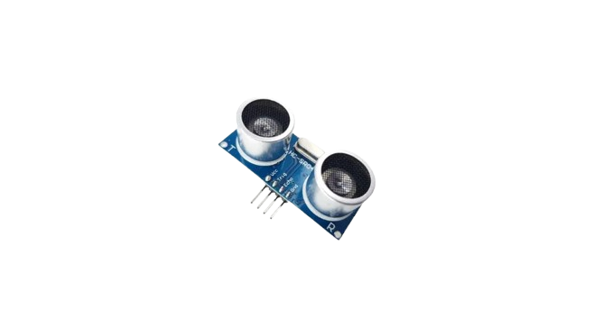
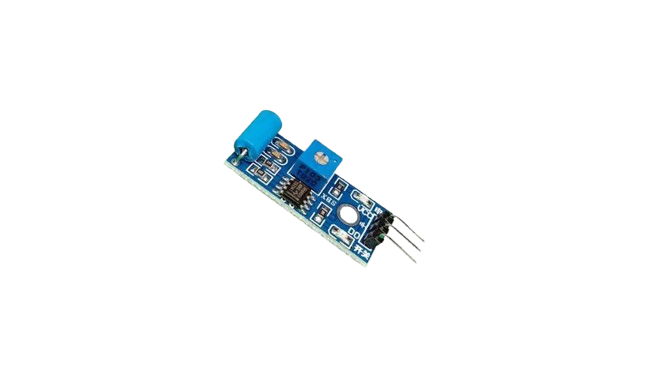
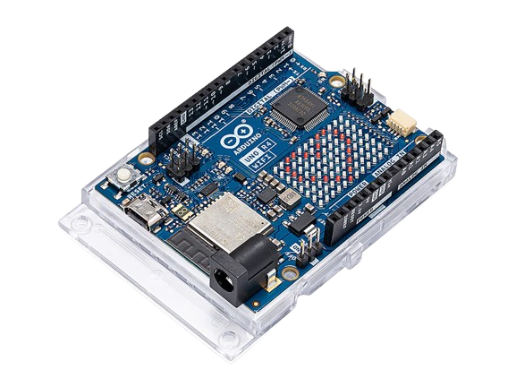
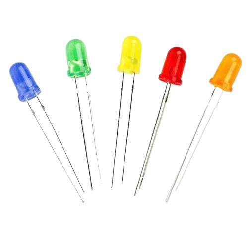
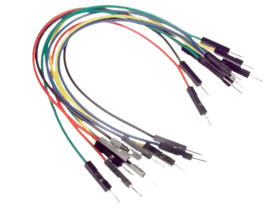

Sensors and Arduino parts
Each card explains the sensor or hardware part, its role in the system, and why it matters in the field.
MQ-2 Smoke Sensor
Air safety

Detects smoke and gas concentration for fire and air hazard warnings.
Ultrasonic Sensor
Water level

Measures distance to the water surface to track rising flood levels.
Vibration Sensor
Seismic watch

Captures tremors and shocks to flag possible seismic activity.
Arduino R4 Board
Controller

Collects sensor data, formats it, and sends the readings to the system.
Alarm Buzzer
Alert

Provides audible alerts when thresholds are exceeded or status is critical.
Status LED
Signal

Gives quick visual feedback for safe, warning, and critical states.
Jumper Wires
Connectivity

Connects every module to the controller for stable signal routing.